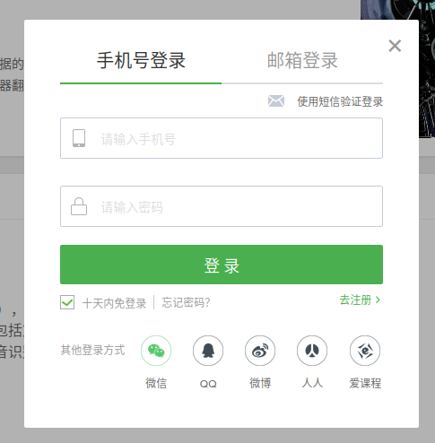

无需登录即可浏览网易云课堂的视频
意外的发现了一个无需登录网易云课堂即可浏览课程视频的方法，在此和大家分享。(至少截至2020.5.11这种方法还是有效的)
前言（可跳过的废话）
- 为什么不想登录？
我不是反对账号制这种模式，而是非常反对目前的互联网环境里很多毫无必要登录的行为也必须注册登录才能完成的引流模式。
- 小插曲：最近刚得知一个叫做“临时邮箱”的东西【1】，本想着其实也可以用临时邮箱注册一个账号试一下。但是发现虽然有邮箱登录的选项，但是没有邮箱注册（匿名制的）的选项，只有手机号注册，或微信、QQ、微博、人人、爱课程账号第三方登录的模式（这些账号全都是实名制的）？

推测是两个可能：1.以前有邮箱注册的选项，邮箱登录是为了兼容老用户。２．注册之后的账号可以绑定邮箱，之后用邮箱登录。不过我并不很好奇是哪种可能，只是为这种全面实名制的（中文）互联网环境感到悲哀。
操作方法
发现绕过登录直接看视频的方法的是这样的过程：第一次我在手机浏览器上点开了网易云课堂的课程链接，顺畅的可以直接观看课程视频，但是第二次我在电脑浏览器上进入网页后，却发现没有这个选项。

所以手机浏览器是可以直接观看视频的，那么要让电脑端也可以的做法就很简单了：修改掉user agent就可以了。
使用插件的方法
可以使用User-Agent Switcher，先点击Override for Domain，然后在mobile里随便选一个user agent就可以了。

注意要先点Override for Domain哦。如果先在mobile里选user agent则所有url都会默认使用mobile的user agent访问了。
不使用插件的方法
如果只是暂时使用一下，不想下载插件的话，也可以通过Ctrl+Shift+M，切换到responsive design mode，然后刷新网页，就可以了。如果想要全屏显示，再按一次Ctrl+Shift+M切换回来，但是不要刷新网页即可。

附录
临时邮箱：tempmai
什么是一次性临时电子邮件？
一次性电子邮件 - 是一项服务，允许在经过一段时间后自毁的临时地址接收电子邮件。 它也被称为：tempmail，10minutemail，一次性电子邮件，假邮件或垃圾邮件。 许多论坛，Wi-Fi所有者，网站和博客要求访问者注册，然后才能查看内容，发表评论或下载内容。 Temp-mail - 是最先进的免费电子邮件服务，可帮助您避免垃圾邮件并保持安全。